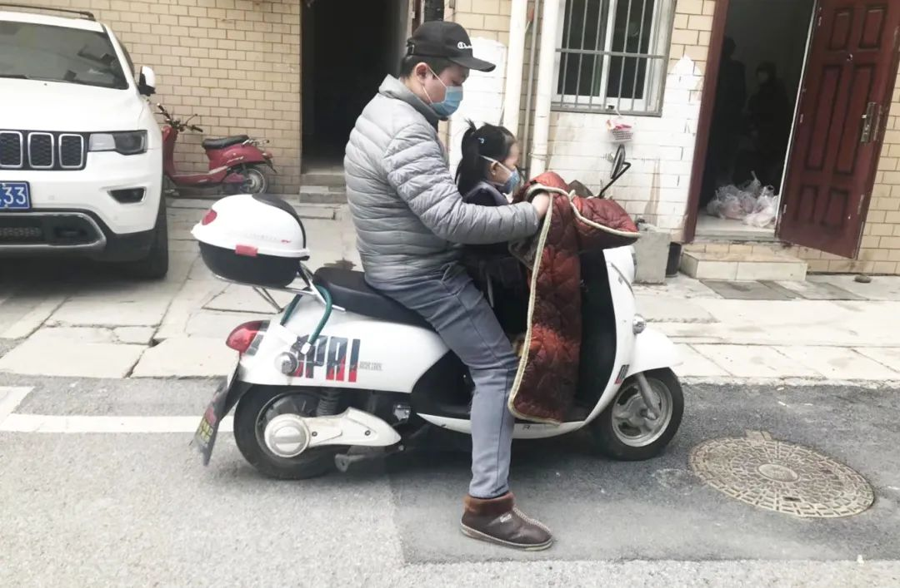
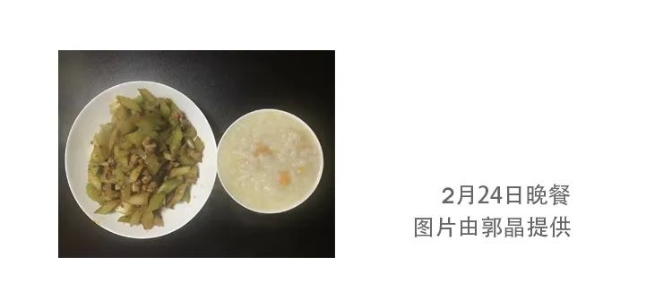
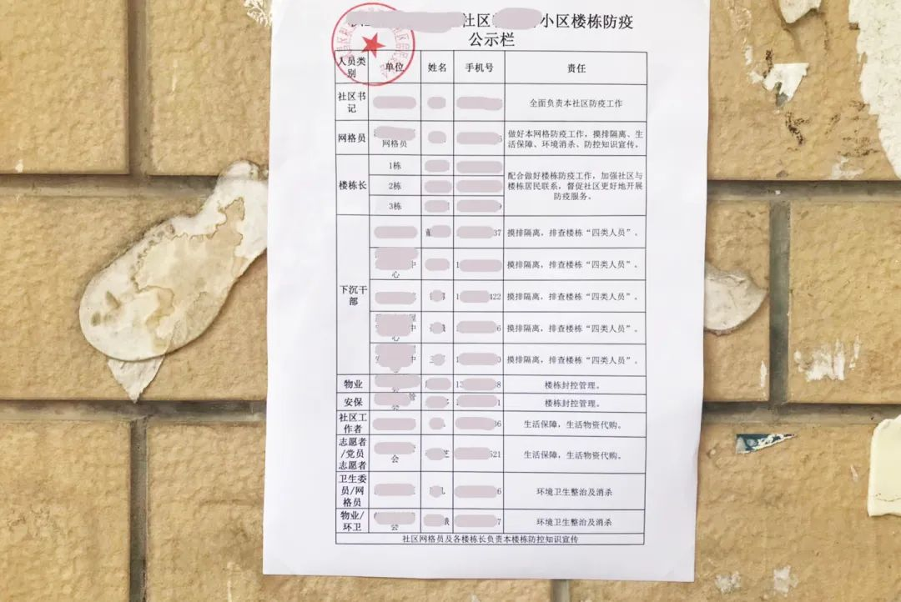
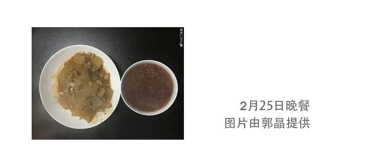
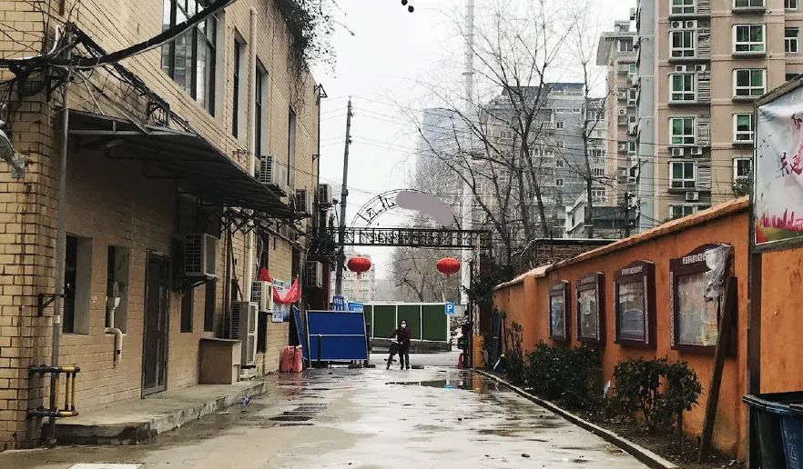
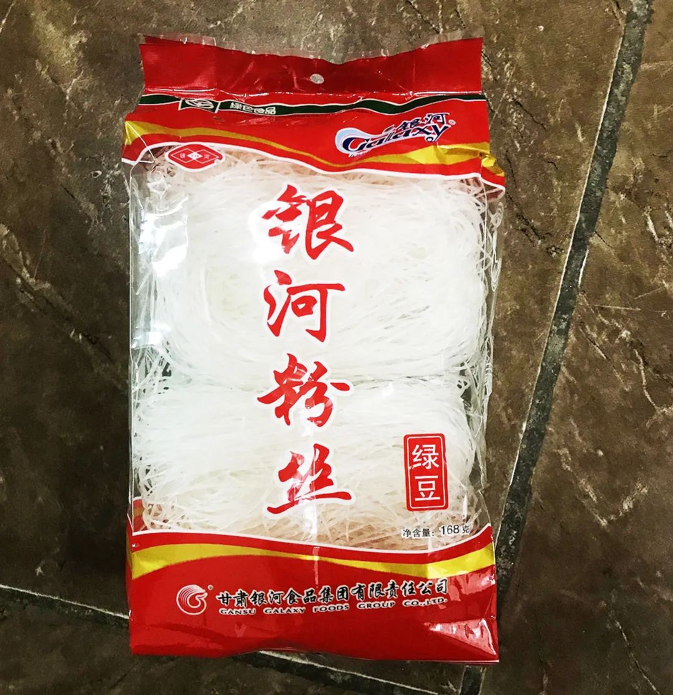
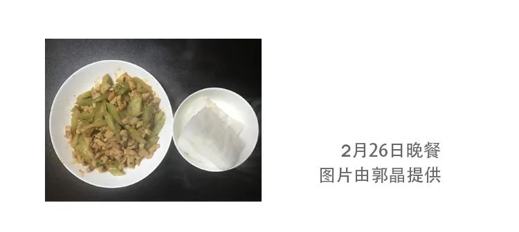
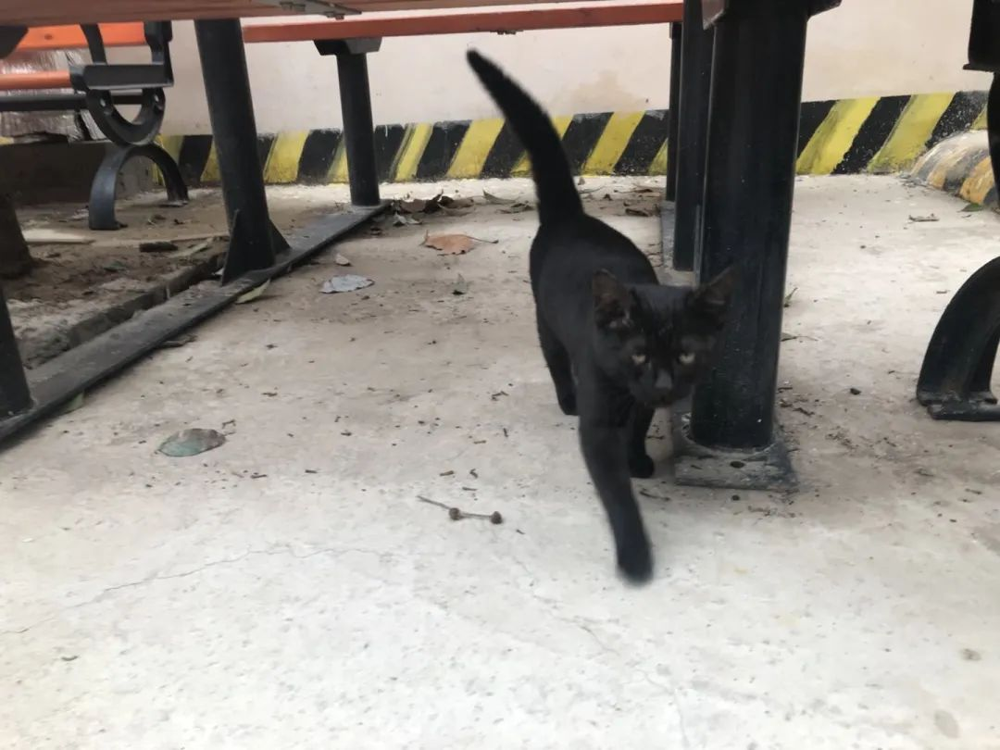
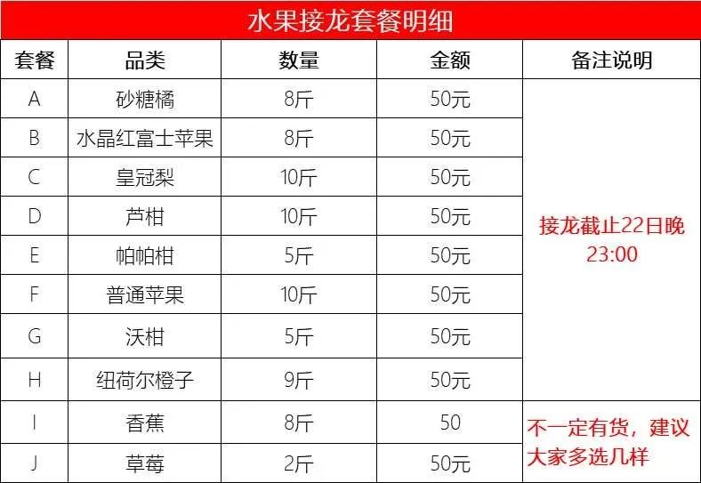
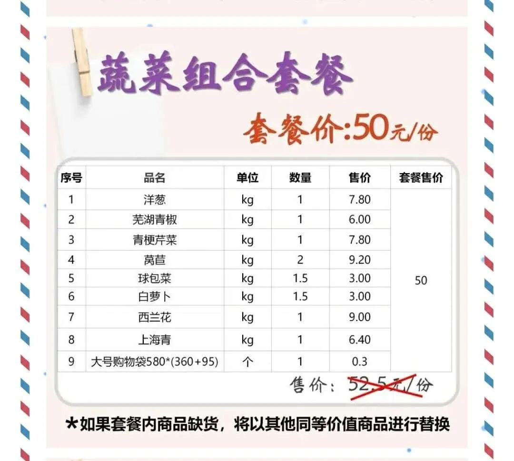

【重发】只能依靠物业的生活|郭晶的捂汗风尘日记2/20-2⁄23
原文链接 备份链接 早晨的雾 （图片由郭晶提供） 重发试一下 这是我的朋友郭晶的日记。 记录了封城期间在武汉独居的外地女性的真实生活体验和心理感受。 这些文字见证了郭晶如何从适应突发危机到重建日常生活，再到尝试帮助他人的过程。 想及时获得 …

小区内隔着窗户聊天的人
（图片由郭晶提供）
这是我的朋友郭晶的日记。
记录了封城期间在武汉独居的外地女性的真实生活体验和心理感受。
这些文字见证了郭晶如何从适应突发危机到重建日常生活，再到尝试帮助他人的过程。
想及时获得最新内容的朋友可以在微博上关注@社工郭晶。
文末有郭晶的个人微信二维码，也可以申请添加。她每天会在朋友圈更新。（但请不要找郭晶闲聊，以免增加她的负担。）
为了方便大家阅读，这个公号会大概每三四天集中搬运一次。
有人从小区外面回来，
我充满了羡慕，
不知道何时才能再走出那个门。

2月24日

这两天我的日记里提到我和小区的一些住户会下楼晒太阳，有人评论说“武汉的人还是不怕”，有人说“心大”。我不能代表在武汉的人，但我自己不是不怕，我只是努力让自己在困境中过得好一点点。
很多下楼晒太阳的人可能跟我一样，在家里憋不住。下楼的人大都会戴口罩，跟别人讲话也都保持着一些距离。每天被困在家里，不知何时会解封，我很心焦，也会感到绝望。
这几天，身体也开始感到疲惫。我没有发烧，食欲也还好，所以应该不是感染肺炎，只是身体对无力感的一种反应。
我们如何理解和尊重别人不同的生活方式？这很难，需要觉察和练习。现在很多家庭内的争吵大多跟不同的生活习惯和生活方式有关。
人们按照一般的、大众的标准生活会相对容易，选择另类生活的人往往会得到一些非议。很多人会用自己的标准去评判别人，而不去理解别人的不同。
如果一个家庭里女人没有那么爱收拾，家里稍微乱一些，就会有人批评这个女人没有尽到本分。

昨天的晚餐是冬瓜炒肉加稀饭。
今天的阳光有点吝啬，10点多就没有了。气温明显有所升高，我和平常穿得一样，厚毛衣加外套，今天开始觉得有点热。白天在房间里都开着窗户。
小区的蓝色围栏有两处被暴风雨打破。今天有三四个人从旁边的工地上搬了一些围栏来修补。我下楼跟他们聊了一下。原来是物业让他们来修的，为了防止有人跳墙。
他们是地铁公司的工人，也是因为封城被困在了武汉，住在旁边的临时房，和他们一样困在这里的一共有9个人。
他们也曾去修建过火神山，有一天11点多临时接到通知，公司派车把他们接了过去，第二天早上才回来。他们一共去了4天。他们说，修建火神山的工人都是两班倒。结束了在火神山的工作，他们也在家隔离了15天。
现在很多社区会找他们帮忙做一些类似维修的工作，他们几个是技术工，有个人说“现在硬是把技术工当作劳动工。”公司会发口罩给他们，他们去火神山有补贴，封城期间也还是有工资。
封锁期间，公司会有专门的厨师给他们做饭。一开始公司还发水果，现在水果很难买到，就只有一日三餐。他们说，封小区之后，外面的便利店和小超市都关了， 只有大超市还开着，不过超市只接受社区和物业的团购，个人进不去。他们现在的出入没有特别的限制，但也需要给公司说一声。
他们说现在在屋里呆着，不太担心感染。我问他们的家人担心吗？有个人说：“假如今天家人打电话没接到，就会有亲戚不断打电话，直到接电话为止。”

修补围栏的建筑工人
有个男人骑着电动车带女儿在小区里转，挡风罩里还有一个小狗。
11点多，物业通知大家去拿一个团购套餐，说还有十一份鸡翅和七份鸡胸肉，先到先得。于是，今天物业办公室门前排队领团购的人要更多一些，大家排队的时候自觉和前面的人保持距离。
平时下楼散步很少见到女人，领团购时下楼的女人多了一些。我们预定的团购套餐是：干子+千张+宽粉+豆腐+馒头+吐司，50元/份。我拿到的是：两包豆干，一盒豆腐和一袋发糕，共14.2元，和预定的不一样。我刚好拿到了最后一袋鸡胸肉，13元。
我把团购拿回家就放在门口的地上去做饭了，下午物业的工作人员说豆腐坏了，1份3.5元，让大家下楼退款。有人表示打开盒子后发现豆腐是粘的。有人问：下次团购抵扣行不行，免得又下楼一次，增加风险。物业的人回复道：下次团购抵扣也可以。
有人嫌麻烦，就表示不退款了，有人则说：不要退款是不是便宜中百了。有人在群里分享了把豆腐做成腐乳的做法。

团购套餐和鸡胸肉
（图片由郭晶提供）
前几天网上曝光了很多超市随意涨价，团购里有不合理套餐，引发了很多讨论和关注。今天有人在群里发了生鲜事业部的通知，制定了“社区套餐供应模式”的价格，具体如下：
1、推出“民生蔬菜10元套餐”，具体为：三个品种、共10斤10元。（共大白菜、包菜、白萝卜、红萝卜、土豆等5个，每套餐品种不少于3个）
2、所有生鲜商品执行1月16日-1月22日平均价格。（没有查到价格具体是多少）
3、政府储备冻猪肉售价调整：精瘦肉15.5元/斤、五花肉18.5元/斤、肋排25.7元/斤。
有人回复说：政策挺好，问题是这个订不订得到。
前几天有人问有没有鱼的团购，今天物业组织团购活鱼，我没有处理过活鱼，就没有接龙。
下午小区里响起了喇叭声：社区居民请注意，街道消毒车现在到社区进行消毒工作，请大家注意安全，关好门窗。有人就在微信群里提醒大家关窗，还拍了张照片发到群里，提醒有人没收衣服。
供电局的楼里今天下午又在用大音响放音乐，比平时热闹了一些。

2月24日骑着电动车载女儿和小狗的人
（图片由郭晶提供）
2月25日
有很多人问过我：解封后第一件事会做什么？很多人都想吃火锅，我一开始也想。吃火锅要和大家一起才有氛围。中国人习惯于合餐，可以吃到更多种类的菜。
解封后，要大家再度放心地聚集起来也非易事。现在我很少想到解封，武汉的现存确诊人数3万以上，解封遥遥无期，想也没用。
仔细思考了一下，我觉得解封可能跟封城是两回事。解封是一个过程，不会像封城一样是一个临时性的决定，第二天迅速就能够实施。
现在一些城市的确诊人数的新增为0，现存确诊患者人数已经在下降，很多城市已经在降低封锁的程度。然而，很多人依旧不敢轻易出门。这大概是封锁的后遗症，很难一下子消除。
所以，很多人最终可能会先试探性地出门，在人少的街道、广场、公园逛一逛，去超市买一些食材，回家做顿大餐。一些餐厅则会试探性地营业，一开始只做外卖，然后慢慢让人在店里就餐。
昨天的晚餐是芹菜炒肉加稀饭。

今天的阳光很好，昨天骑车在院子里逛的男人、小女孩和小狗今天还到院子里玩，小女孩的奶奶也一道下来了。小女孩叫彤彤（音），狗叫小步（音）。彤彤带了一个儿童滑车在玩，玩了一会后，她让奶奶帮她把小步抱上了滑车，她在前面牵着绳子走。
有一户一楼的人家在阳台上晒太阳，彤彤的奶奶跟他们隔着窗子对话，她说：“戴口罩在空旷的地方没关系的。”有个抱着小孩的女人对小孩说：“我们也有这个车，我们也戴口罩好不好？”小孩年纪很小，不会讲话，女人似乎是在跟自己讲话。不过，他们一家人也没出来。
突然有歌声从楼上的某个房间传了出来，院子里有三两成群聊天的人、那个放戏曲的男人，有些热闹，我也没听到楼上的人唱了什么。
有两个社区的人在楼下贴了“防疫公示栏”，上面有写了不同人的的责任和联系方式，有社区书记、网格员、物业、安保、社区工作者、志愿者等。

2月24日在小区里玩耍的女孩和狗
（图片由郭晶提供）
今天早上，物业工作人员在群里报体温，“1-602三人体温正常”。大家就自觉地跟着报体温。物业的人还在群里发了通知：请大家注意：每天小区都会消毒，届时听到消毒的广播声请业主关好门窗，谢谢配合！不过，今天我没有听到广播声。
有人发了中百仓储的团购套餐到群里，大家开始问：
“有没有要订蔬菜和水果的啊？”
“肯定也得社区联系吧。”
“中百仓储的套餐怎么订啊？”
“家里冒得菜（武汉话：没有菜）了，可不可以买点菜”
“现能出去买点菜吗？”
“主任，能把社区电话告诉我吗？”
物业的主任发了电话到群里。
有住户说：“上周我们这边所有中百仓储团购的我都打了电话的，要么没有货要么没人送。”
“我们小区团购人数少了，别人不想送，他们巴不得送就送一大车，这样好赚钱。”
“不送就打市长热线。”
最终，有人找到一个中百仓储的几个套餐，有蔬菜套餐、水果套餐、肉套餐。有人在群里发了个接龙，大家都跟了上去。
有人发了个图片，是中商的10元特价蔬菜包，问，“主任可不可以跟社区申请政府补贴菜呀？”
主任表示：“我已经和社区联系好了，他们再和中商、中百联系。”

防疫通告栏
2月26日
小区群里今天发了一个《武汉居民倡议书》，倡议的核心有两点：一是小区团购适可而止，只团刚需食品；二是少制造垃圾。这次是倡议，而非强制性命令，也算是进步。可是团购现在只有小区和物业才能统一购买，很难再进一步控制了。
这个倡议书为了说服大家，写道：“一线的医护人员在拼命的同时，后方也有一群默默无闻的人们在保障我们的日常生活。我们每个能够幸福地待在家的人，不能冲锋陷阵至少可以不添乱，不去给别人增添太多的麻烦，这也是在做贡献！”
这让我感到不适，不管是否在武汉的人，我们都看到医护人员的付出，理解医护人员的辛苦，很多志愿团体也在尽力为医护人员提供支持。讽刺的是，社交媒体上转载的广东省第一批援助武汉的医护人员发表在《柳叶刀》上的一封信却被删了。

现在只能待在家里的人可能是“幸运”，但根本不是“幸福”。什么是不添乱？那个在爷爷去世几天后也没有向外求助的六岁小男孩没有添乱，爷爷在卫生间突然昏厥后，他叫了两个小时，爷爷没有回复。他听爷爷的话“外面有病毒，不能出去”。于是，他在家吃了几天饼干维生，直到社区工作人员上门排查才发现了这个悲剧。
昨天的晚餐是冬瓜炒肉加稀饭。

晚上和朋友们闲聊了一会，我实在太累了，就先睡了。没想到，我和朋友们一聊就是一个多月，没有间断过。这是在封锁中一份特别的陪伴。
昨晚9点左右下起了雨，连续下了几个小时，外面的雨打在遮阳板上的声音嘀嘀嗒嗒地响个不停。我做了一个梦，不记得梦里的细节，只记得有很多人。早上半睡半醒的时候，我挣扎着想起床，又有些留恋梦中的人。
早上8点钟醒来，外面没有在下雨了，天是阴的。听戏曲的那个男人已经在楼下散步。他的坚持让我有些敬佩。
上午，物业在群里发了信息：大家好，最近我观察大家需要水果、蔬菜、肉，为此今天先推荐水果清单，大家看一下，如需要在中午一点钟之前订好，争取晚上之前货到小区。水果品种还挺多，一种水果一个套餐，都是50元，有砂糖橘、水晶红富士苹果、皇冠梨、芦柑、帕帕柑等。
于是有人搞起了水果的接龙。有人提出：“水果大家任选，每家都不一样，卖家分得清吗？不如挑几样大家都认可的组成一份，定个价，再接龙。”
物业的主任回复道：“尽量满足大家的需求，就是我们麻烦一下”。一会儿，主任又在群里发：现在有少量的爱心物资，请业主尽快来办公室领取。
有人问：“主任，是什么东西啊？”
没人回复。
我想着下楼到院子里走一圈，就下楼领了物资，是一包粉丝。领了后，拍照发到了群里。有个人穿了睡衣下楼领粉丝。有人从小区外面回来，我充满了羡慕，不知道何时才能再走出那个门。

2月26日让人羡慕的回小区的人
（图片由郭晶提供）
下午，前两天团购的鱼到了。
两点多，物业又发了一个蔬菜套餐和肉食套餐到群里，这两个套餐是昨天有个住户发到群里的，大家已经接龙过了，有人问：“主任，先前的接龙是不是作废了？”主任答道：“你们先前接龙的事我不知道。”大家只好再搞一个接龙。
物业的主任说：“我们小区接龙要30份以上，如果达不到数字我们只能等和别人拼单了。”
大家都很着急，有人仔细核对接龙的信息，发现有的人没接上，有人提醒，“还没有接龙的继续哦。”
最后终于凑给了30份，结果主任说：“我已把接龙发给社群，我得到的通知中百可能又有变化，一天一个样，等会社区会把中百的套餐发过来，我再转发给你们。”不知道今天团购的套餐是否会成功。
有人提出建议：“建议主任艾特全部人，不然很多大哥大姐不见得看得到信息”，这个人还耐心地在群里发了群主艾特所有人的步骤。
有人问：“小区有没有家里有多余的烟的呀？20块以下的都行，一条以内都可以”，就有人发了一个群二维码，说“这个有烟，不接触送的！”
“请问邻居们有没有酵母粉啊，卖我几包”，没有回应。
之前组织大家买水果的女人很有门路的样子，她说她爸爸前几天给她送了一箱水果，够吃一个月。她在水果拼团的小群里发了很多东西问有没有人买，有榨菜、佐料、韭黄、蒜苗、洋葱、荷兰豆、撒尿牛丸。
她说：“封城第一天，我就在中百超市买了10桶2斤装的面条。家里人多，佐料都是成件买。”现在看来，她真有先见之明。

2月26日的爱心物资
（图片由郭晶提供）
2月27日
一切犹如昨天，
明天也将如此，
有人已死去，
有人在牺牲，
有人在发声，
有人在辟谣，
有人在投机，
有人扫大街，
有人睡大街，
有人在团购，
有人送快递，
有人不出门，
有人在散步，
有人躺在家，
有人已复工，
有人被家暴，
有人常年做家务。

2月28日
疫情中的家暴正在浮出水面。疫情期间的封锁增加了受害者求助的难度，也增加了反家暴的支持工作的困难。
深圳女孩@整点范德彪被前男友史某拿头往墙上撞。她很勇敢，2月19日逃离后报了警。为了验伤，她不得不去医院。没想到她还在医院做了新型冠状病毒的检测。女孩希望可以追究施暴者的责任，可惜，调解员对女孩说，“他的工作这么好，你这样会毁了人家”。
2月26日，女孩把她的经历发到网上，写道：希望能改变什么，这不只是我一个人的事。十万余人转发了她的微博。2月27日，深圳市公安局南山分局发了通报，史某被行政拘留5日并罚款200元，对于调解员用语不规范的行为，警方将加强教育，并对报警人表达歉意。遗憾的是，从通报里看不出这是一个家暴案件。

图片来自微博@人间摄像头
我也接到一些家暴的求助，有几个求助者是因为疫情不能上学的孩子，他们要天天面对父母的争吵和暴力而不知所措。即便有困难，受害者还是在求助，那我们要尽力让她们看到有人在支持她们。为了和大家一起讨论和学习可以做什么，我联系了冯媛做一个线上的直播讲座，她有二十多年防治性别暴力的经验。打个广告：直播时间是明天晚上（2月29日）20:00。

昨天上午，有个车从外面来，车上坐的全是清洁工，他们下车后背上喷雾箱，分散到各个楼里去消毒。有人在给他们拍照。
小区里有只纯黑的猫在到处乱窜。院子里没啥人，有个男人在抽烟。有人到小区门口取了快递，有一排鸡蛋，和一个冰红茶的箱子，不知道里面是什么东西。有个人在院子里跑步。
下午，团购的水果到了。我买的是一份8斤的砂糖橘，50元。大家都说物业团购的水果质量很好，纷纷表示感谢。有人在家里做了炸鸡腿，拍照发到群里，外焦里嫩的，旁边还洒着胡椒面，大家都被馋得不行。
昨天的晚餐是包菜炒肉加稀饭。

晚上，物业的工作人员问：“大家好，是否需要未撮水的热干面？4斤/18元，需要就登记一下。上回没有买芝麻酱的业主，现在需要吗？”好几个人说要。上次团购的热干面还搭配了面粉，我就没要。这次我跟上了接龙。
我跟朋友说起我要第一次学做热干面啦，不过只有芝麻酱和辣椒。有个湖北的朋友说：“热干面没有葱和芝麻油就没有灵魂。”我又从那个有门路的女人那里买了一瓶醋和一斤榨菜。我说：“不着急，下次下楼领菜的时候给我就好”。她倒是热心，说：“我老公现在下楼放你家门口。”我们还没约定好怎么交接，她老公就下来了。我就开了门，她老公带着口罩，把东西递给我就走了。

小区的黑猫
这几天天气一直是阴天，今天又下了雨，我就没有下楼。温度也降低了，我又开起了空调。
小区的群里时不时有人发鸡汤类的文字，也没人回应。早上，有人发了一个视频，内容是某个小区外面有一些人在小区门口三五成群的聊天，视频里的人都有戴口罩，解说的人说社区的人也不管。
有人说：“请不要再转发了，被关在家里的我们其实看了心情并不能多好。这些人不配合，自会被请去公安局的！”有人说：“有关生活物质的发，其他的无关的发自己的亲友群。” 有人说：“群里确实可以少发视频，接龙的跟收菜信息容易被刷掉。”
被困在这里，每天的生活又似乎一成不变，这让我有点烦躁。重复容易让人厌倦，但改变也非易事。改变需要我们对自己惯常的行为模式有所觉察，并尝试走出自己的舒适区，打破常规。

50元买的橘子
今天有好几个人都问：订的蔬菜有消息吗？
物业的主任每次都说：“在等中百仓储的电话。”
有人发了一个199元的澳大利亚牛腱子肉的团购，上面写着顺丰直邮，她前天买的，今天收到了。她还在群里问：“3栋哪家有老抽酱油？卖我一瓶，卤牛肉没酱油了。”
有人问：“主任，有没有团购米的？”
主任：“没有”。


小区群内的团购消息图
如果你遭受性别暴力
紧急情况下第一时间拨打110报警
如非紧急可打为平妇女支持热线
15117905157
热线全年无休

我想成为一个联结点，
希望可以和更多的人建立联结，一起行动。
我的微信号：1461177244。

阅读更多：
【播客】疫控时期，如何重建对生活的掌控感？
原文链接 备份链接 早晨的雾 （图片由郭晶提供） 重发试一下 这是我的朋友郭晶的日记。 记录了封城期间在武汉独居的外地女性的真实生活体验和心理感受。 这些文字见证了郭晶如何从适应突发危机到重建日常生活，再到尝试帮助他人的过程。 想及时获得 …
原文链接 备份链接 2月16日马路上晒太阳的狗 （图片由郭晶提供） 这是我的朋友郭晶的日记。 记录了封城期间在武汉独居的外地女性的真实生活体验和心理感受。 这些文字见证了郭晶如何从适应突发危机到重建日常生活，再到尝试帮助他人的过程。 想及 …
原文链接 备份链接 一个漫长的三十天熬过去，不知道能不能写到下一个三十天。同事们陆陆续续返工，有搭普通火车颠簸回的，有花几百从农村坐黑车走小路，也有和其他人拼车自驾的。西安刚出的复工政策只需要做核酸检测，无需隔离14天，直接拿结果去上班， …
原文链接 备份链接 他们理解小区被封，理解只能选择被塞了四大包汤圆的团购套餐，理解菜价成倍上涨，理解要继续忍受生活上的不便，才有可能早一点等来结束的一天。 文 | 谢婵 编辑 | 小豆 武汉伢王嘉兴给父母打电话，得知小区业主群里推荐 …
原文链接 备份链接 【手语话剧】 布景：某城小区，高楼林立，灯光渐亮，手机刷屏。 我买了2块豆腐，冻了一块，另一块和剩下的干子用盐水泡起，争取多吃几天。 其他小区有团购取货发病的病例，个别配送人员有发病的。 买了大鱼，冇得萝卜。 我帮你找 …